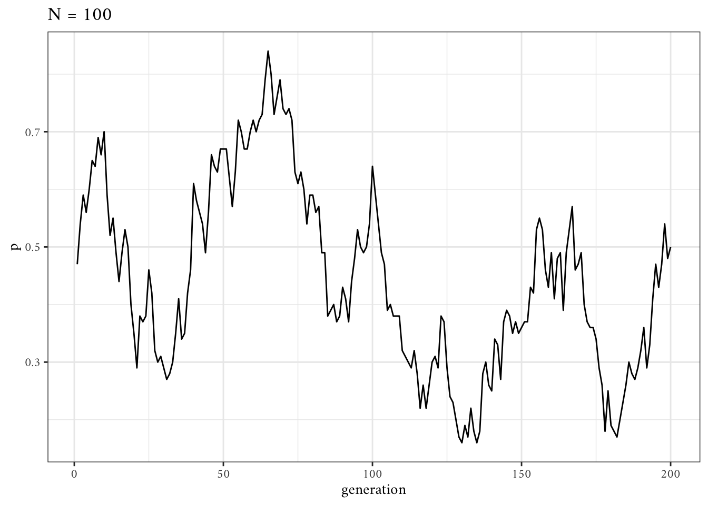
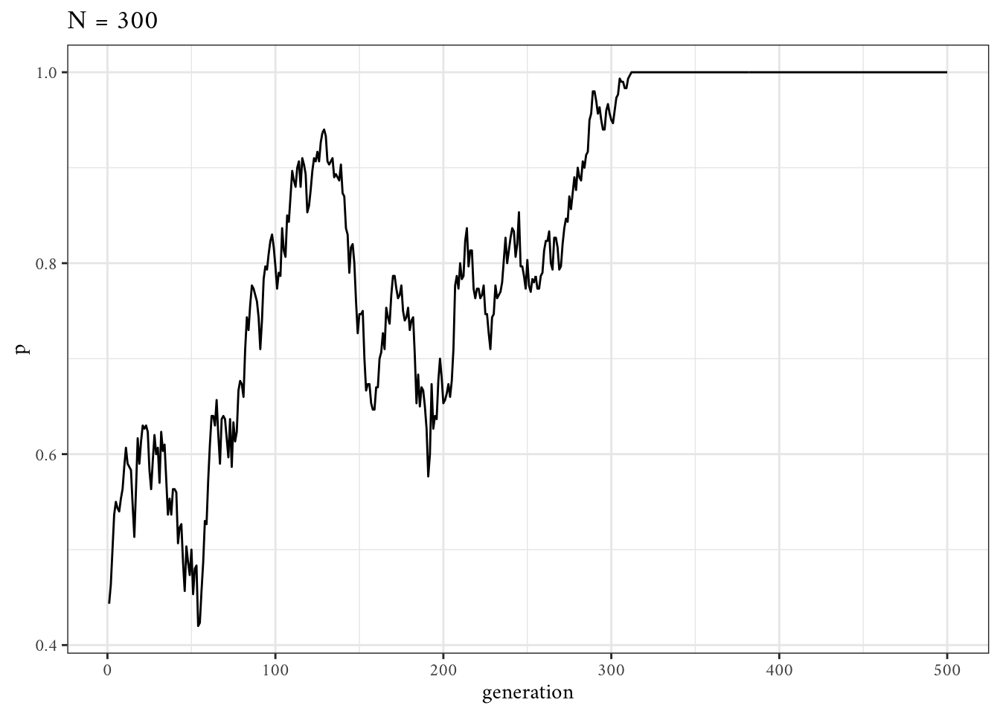
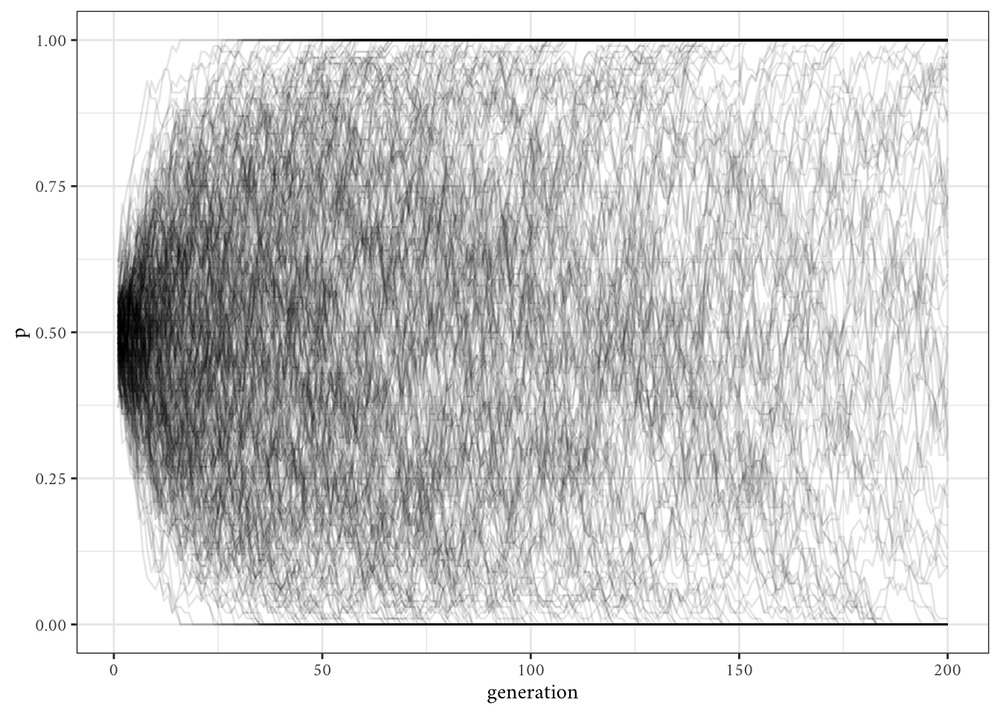
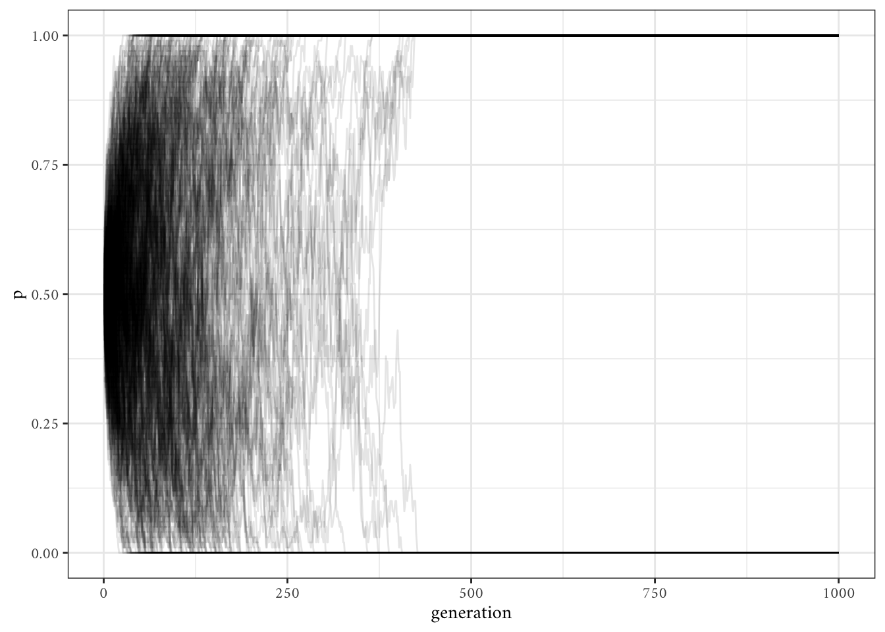
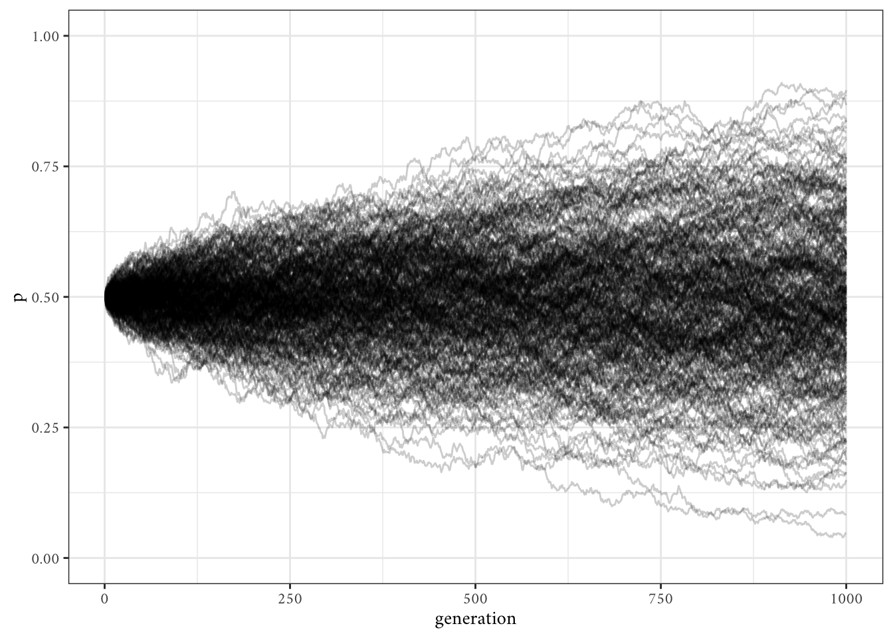
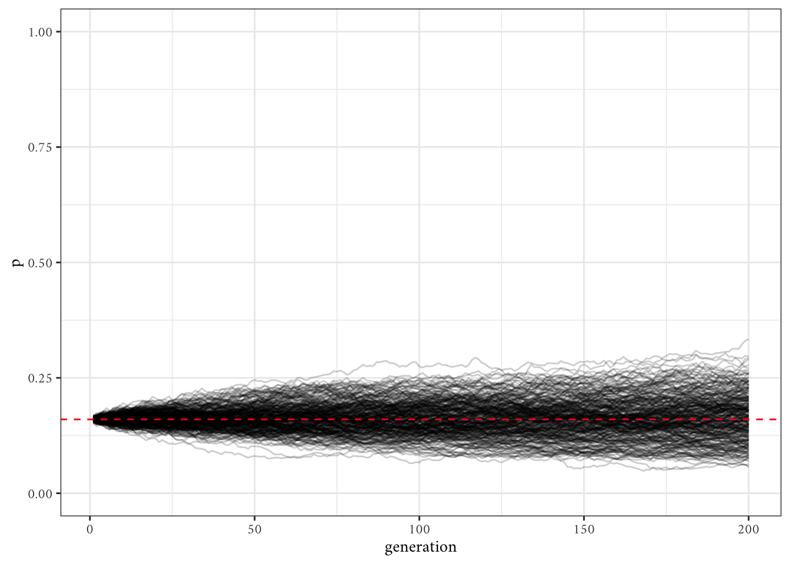

Code
library(tidyverse)
theme_set(theme_bw(base_family = "Amiri"))
library(future.apply)
plan(multisession, workers = parallel::detectCores() - 1L)Note. All quotations come from here.
library(tidyverse)
theme_set(theme_bw(base_family = "Amiri"))
library(future.apply)
plan(multisession, workers = parallel::detectCores() - 1L)This is perhaps the simplest possible model of cultural evolution.
We assume \(N\) individuals each of whom possesses one of two cultural traits, denoted \(A\) and \(B\). Each generation, the \(N\) agents are replaced with \(N\) new agents. Each new agent picks a member of the previous generation at random and copies their cultural trait. This is known as unbiased oblique cultural transmission: unbiased because traits are copied entirely at random, and oblique because one generation learns from the previous non-overlapping generation (as opposed to horizontal cultural transmission where individuals copy members of the same generation, and vertical cultural transmission where offspring copy their parents—our model is way too simple to have actual parents and offspring though).
Given this set up, what is the proportion \(p\) of individuals that have trait \(A\) over successive generations?
First we specify the number of fixed parameters in the model.
\(N\): the number of individuals
\(t_\text{max}\): the number of generations
N <- 100
t_max <- 200Then we create our agents, which we store in a vector.
agent <- sample(c("A", "B"), size = N, replace = TRUE)
str(agent) chr [1:100] "A" "B" "A" "B" "A" "A" "B" "B" "B" "A" "A" "A" "B" "B" "B" ...We also create a vector to track the trait frequency \(p\) in each generation.
p <- vector("double", length = t_max)The parameter \(p\) for the first generation is easy to calculate.
p[[1]] <- sum(agent == "A") / N
p[[1]][1] 0.47What we want do next is iterate over \(t_\text{max}\) generations.
for (t in 2:t_max) {
# copy agent to previous_agent
previous_agent <- agent
# randomly copy from previous generation's agents
agent <- sample(previous_agent, N, replace = TRUE)
# get p and put it into the output slot for this generation t
p[[t]] <- sum(agent == "A") / N
}
tibble(p) |>
mutate(generation = row_number()) |>
ggplot(aes(generation, p)) +
geom_line() +
labs(title = str_glue("N = {N}"))
Unbiased transmission, or random copying, is by definition random, so different runs of this simulation will generate different plots. If you rerun all the code you’ll get something different again. […] This is a typical feature of cultural drift, analogous to genetic drift: in small populations, with no selection or other directional processes operating, traits can be lost purely by chance.
UnbiasedTransmission <- function(N, t_max) {
agent <- sample(c("A", "B"), size = N, replace = TRUE)
p <- vector("double", length = t_max)
p[[1]] <- sum(agent == "A") / N
for (t in 2:t_max) {
previous_agent <- agent
agent <- sample(previous_agent, N, replace = TRUE)
p[[t]] <- sum(agent == "A") / N
}
return(p)
}
tibble(p = UnbiasedTransmission(300, 500)) |>
mutate(generation = row_number()) |>
ggplot(aes(generation, p)) +
geom_line() +
labs(title = str_glue("N = 300"))
We can run this function multiple times now.
S <- 300 ## number of simulations
G <- 200 ## number of generations
N <- 100 ## number of individuals
sim <- future_replicate(n = S, UnbiasedTransmission(N, G)) ## parallel replication
colnames(sim) <- paste0("run", 1:S)
dim(sim)[1] 200 300df <- as_tibble(sim) |>
rowid_to_column("generation") |>
pivot_longer(cols = !generation, names_to = "simulation", values_to = "p")
df |>
ggplot(aes(generation, p, group = simulation)) +
geom_line(alpha = 1/10)
Note that \(p\) seems to go to either 0 or 1 over time. Let’s see what happens when we increase the number of generations.
S <- 300 ## number of simulations
G <- 1e3 ## number of generations
N <- 100 ## number of individuals
sim <- future_replicate(n = S, UnbiasedTransmission(N, G)) ## parallel replication
colnames(sim) <- paste0("run", 1:S)
dim(sim)[1] 1000 300df <- as_tibble(sim) |>
rowid_to_column("generation") |>
pivot_longer(cols = !generation, names_to = "simulation", values_to = "p")
df |>
ggplot(aes(generation, p, group = simulation)) +
geom_line(alpha = 1/10)
Now we’ll run UnbiasedTransmission() with \(N = 10,000\).
S <- 300 ## number of simulations
G <- 1e3 ## number of generations
N <- 10e3 ## number of individuals
sim <- future_replicate(n = S, UnbiasedTransmission(N, G)) ## parallel replication
colnames(sim) <- paste0("run", 1:S)
dim(sim)[1] 1000 300df <- as_tibble(sim) |>
rowid_to_column("generation") |>
pivot_longer(cols = !generation, names_to = "simulation", values_to = "p")
df |>
ggplot(aes(generation, p, group = simulation)) +
geom_line(alpha = 1/5) +
ylim(0, 1)
Note that with a large enough population, the proportion stays around 0.5. We can change the original proportion \(p_0\) and see if the results remain similar.
UnbiasedTransmission <- function(N, t_max, p0) {
agent <- sample(c("A", "B"), size = N, replace = TRUE, prob = c(p0, 1-p0))
p <- vector("double", length = t_max)
p[[1]] <- sum(agent == "A") / N
for (t in 2:t_max) {
previous_agent <- agent
agent <- sample(previous_agent, N, replace = TRUE)
p[[t]] <- sum(agent == "A") / N
}
return(p)
}
S <- 300 ## number of simulations
G <- 200 ## number of generations
N <- 10e3 ## number of individuals
p0 <- 0.16 ## initial proportion of trait "A"
sim <- future_replicate(n = S, UnbiasedTransmission(N, G, p0))
colnames(sim) <- paste0("run", 1:S)
dim(sim)[1] 200 300df <- as_tibble(sim) |>
rowid_to_column("generation") |>
pivot_longer(cols = !generation, names_to = "simulation", values_to = "p")
df |>
ggplot(aes(generation, p, group = simulation)) +
geom_line(alpha = 1/5) +
geom_hline(yintercept = p0, linetype = "dashed", color = "red") +
ylim(0, 1)
Unbiased transmission is truly non-directional: it maintains trait frequencies at whatever they were in the previous generation, barring random fluctuations caused by small population sizes.
[…]
Even this extremely simple model provides some valuable insights. First, unbiased transmission does not in itself change trait frequencies. As long as populations are large, trait frequencies remain the same.
Second, the smaller the population size, the more likely traits are to be lost by chance. This is a basic insight from population genetics, known there as genetic drift, but it can also be applied to cultural evolution. More advanced models of cultural drift (sometimes called “random copying”) can be found in Cavalli-Sforza & Feldman (1981) and Bentley et al. (2004), with the latter showing that various real-world cultural traits exhibit dynamics consistent with this kind of process, including baby names, dog breeds and archaeological pottery types.
Furthermore, generating expectations about cultural change under simple assumptions like random cultural drift can be useful for detecting non-random patterns like selection. If we don’t have a baseline, we won’t know selection or other directional processes when we see them.